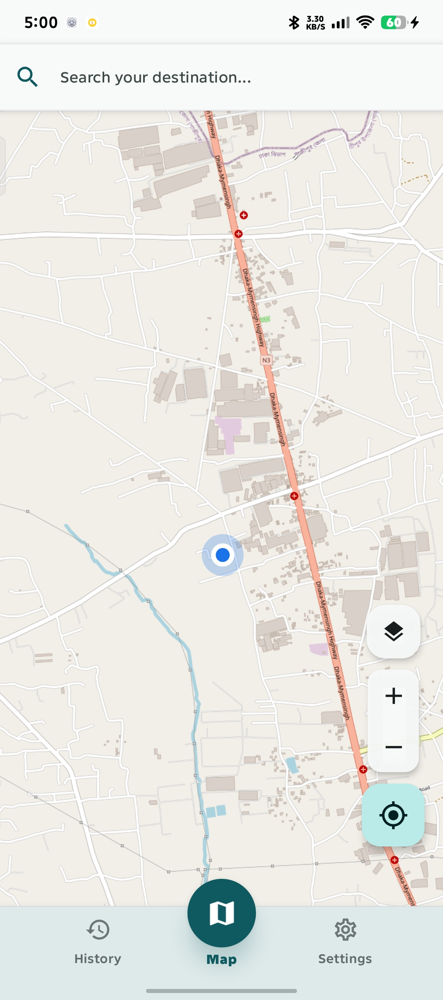
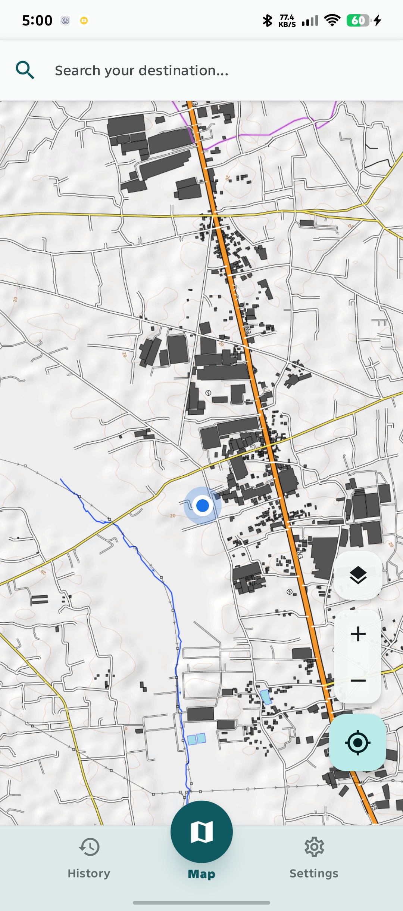
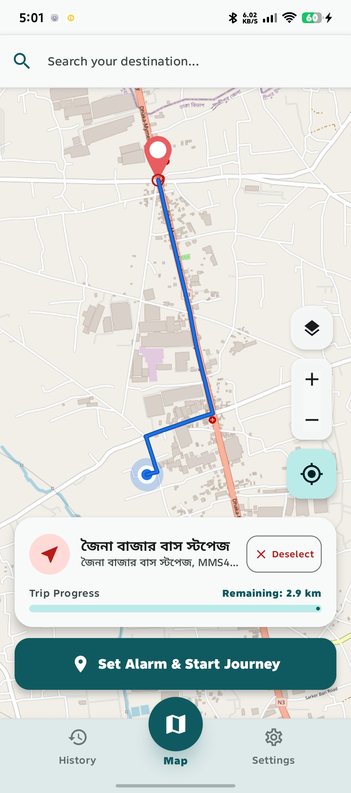
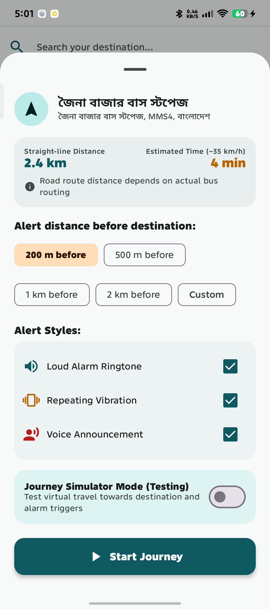
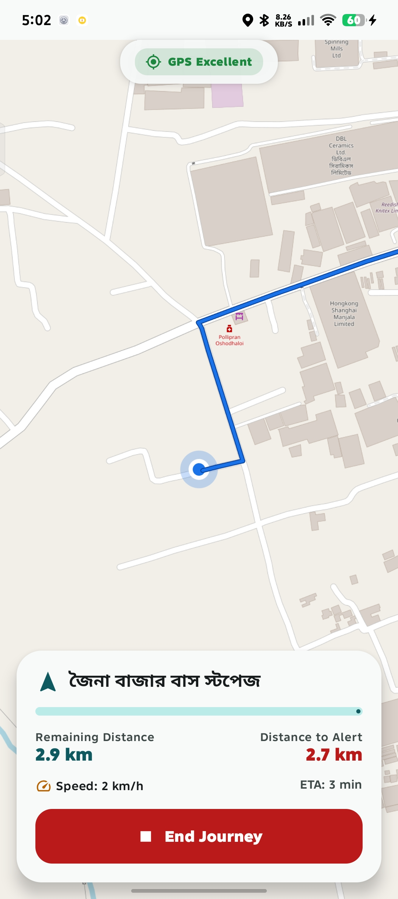
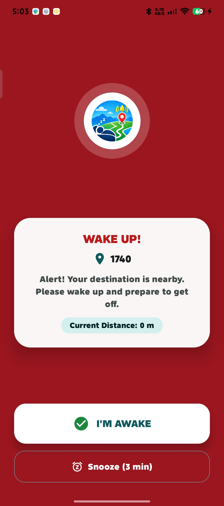

বাস, ট্রেন বা যে কোনো যাতায়াতে সঠিক স্টেশনে নামার টেনশন দূর করুন। ব্যাকগ্রাউন্ড জিপিএস ট্র্যাকিং, বাংলা ও ইংরেজি অডিও ভয়েস নোটিফিকেশন এবং ব্যাটারি অপ্টিমাইজড রিয়েল-টাইম দূরত্ব অ্যালার্ট।
সহজ, আধুনিক এবং যাত্রীদের সুবিধার কথা ভেবে তৈরি আকর্ষণীয় ইউজার ইন্টারফেস।

লাইভ লোকেশন ও মসৃণ ওএসএম ম্যাপ

হাই-কনট্রাস্ট ও স্পষ্ট রোড নেটওয়ার্ক

রুট পাথ ও দূরত্বের স্পষ্ট প্রিভিউ

দূরত্ব ও কাস্টম সাউন্ড নির্ধারণ

রিয়েল-টাইম দূরত্ব ও ওএসআরএম রুট

বাংলা ভয়েস সতর্কবার্তা ও ফুল অ্যালার্ম
বাস, ট্রেন বা যে কোনো যাতায়াতে সঠিক সময়ে আপনাকে সতর্ক করতে যা যা দরকার, সবই আছে এতে।
ডিভাইসের উচ্চ-ক্ষমতাসম্পন্ন হার্ডওয়্যার জিপিএস ব্যবহার করে গন্তব্যের কত দূর কাছে আছেন তা রিয়েল-টাইমে নিখুঁতভাবে হিসাব করে।
অ্যালার্মের পাশাপাশি আপনার ভাষায় স্পষ্ট অডিও সতর্কবার্তা বাজবে: 'গন্তব্য সন্নিকটে, নামার প্রস্তুতি নিন' — যাতে স্ক্রিনে না তাকিয়েও বুঝতে পারেন।
স্মার্ট ফোরগ্রাউন্ড সার্ভিস ফোনের স্ক্রিন অফ থাকলেও অবিচলভাবে কাজ করে এবং অপ্টিমাইজড জিপিএস স্যাম্পলিংয়ের কারণে ব্যাটারি খরচ অত্যন্ত কম।
৫০০ মিটার, ১ কিমি, ২ কিমি বা আপনার প্রয়োজনমতো দূরত্ব নির্ধারণ করুন। ফোনের রিংটোন বা পছন্দের কাস্টম অডিও সেট করুন।
দেশের প্রধান প্রধান বাস টার্মিনাল, রেলস্টেশন ও জনপ্রিয় স্টপেজ মুহূর্তেই সার্চ করার জন্য দ্রুতগতির ডেটাবেস।
লাইভ দূরত্ব, আনুমানিক সময় এবং সরাসরি ওএসআরএম রুট ম্যাপের সাথে যুক্ত থেকে আপনাকে সবসময় সঠিক ট্র্যাকে পরিচালিত করে।
মাত্র তিনটি সহজ ধাপে আপনার ট্রাভেল অ্যালার্ম সেট করে ফেলুন।
ম্যাপের সার্চ বারে আপনার গন্তব্য লিখুন অথবা ম্যাপের যেকোনো পয়েন্টে সরাসরি ট্যাপ করে ডেস্টিনেশন নির্ধারণ করুন।
গন্তব্যের কতটুকু আগে অ্যালার্ম বাজবে (যেমন ১ কিমি বা ৫০০ মিটার) তা সিলেক্ট করুন এবং জার্নি শুরু করুন।
বাসে-ট্রেনে ঘুমিয়ে পড়ুন! নির্ধারিত সীমানায় পৌঁছামাত্র জোরালো রিংটোন ও অডিও ভয়েস আপনাকে ডেকে দেবে।
Travelarm এর ভার্সন সিস্টেম টেষ্ট করার জন্য আপডেট। নতুন ইন-অ্যাপ আপডেট ডায়ালগ ও পারফরম্যান্স উন্নয়ন।
Travelarm ব্যবহার সম্পর্কে ব্যবহারকারীদের সবচেয়ে সাধারণ কিছু প্রশ্নের সহজ উত্তর।
Travelarm সরাসরি আপনার ফোনের অভ্যন্তরীণ হার্ডওয়্যার জিপিএস (Hardware GPS) এবং অপ্টিমাইজড ওএসআরএম রুট অ্যালগরিদম ব্যবহার করে। এটি রিয়েল-টাইমে আপনার গাড়ির গতি এবং নির্ধারিত গন্তব্য থেকে অবশিষ্ট দূরত্ব নির্ভুলভাবে পরিমাপ করে।
হ্যাঁ, সম্পূর্ণভাবে কাজ করবে! গন্তব্য সেট করে জার্নি শুরু করার পর আপনার মোবাইল ডেটা বা ইন্টারনেট সম্পূর্ণ বন্ধ থাকলেও শুধু স্যাটেলাইট জিপিএস সিগন্যাল ব্যবহার করে এটি নিখুঁত দূরত্বে পৌঁছামাত্র অ্যালার্ম বাজিয়ে দেবে।
১০০% নিরাপদ ও সুরক্ষিত। অ্যাপটিতে কোনো অ্যাকাউন্ট বা সাইন-ইন করতে হয় না। আপনার ব্যক্তিগত অবস্থান বা ভ্রমণের কোনো তথ্য কখনোই ইন্টারনেটে বা কোনো সার্ভারে পাঠানো হয় না—সবকিছু আপনার ডিভাইসের মধ্যেই সুরক্ষিত থাকে।
একদমই না। Travelarm এ রয়েছে বুদ্ধিমান অ্যাডাপ্টিভ জিপিএস সিস্টেম। গন্তব্য যখন অনেক দূরে থাকে তখন এটি শক্তি সঞ্চয়কারী মোডে অবস্থান পরীক্ষা করে, ফলে দীর্ঘ সময় জার্নি করলেও ব্যাটারি ড্রেন হওয়ার কোনো ভয় নেই।
হ্যাঁ, অবশ্যই! অ্যাপটির ব্যাকগ্রাউন্ড সার্ভিস অ্যান্ড্রয়েডের অ্যালার্ম অডিও চ্যানেলের মাধ্যমে বাজানো হয়, যার ফলে ফোন সাইলেন্ট মোডে থাকলেও বা স্ক্রিন লক থাকলেও তীব্র রিংটোন, ভাইব্রেশন ও অডিও এলার্ট আপনাকে সঠিক সময়ে ডেকে তুলবে।